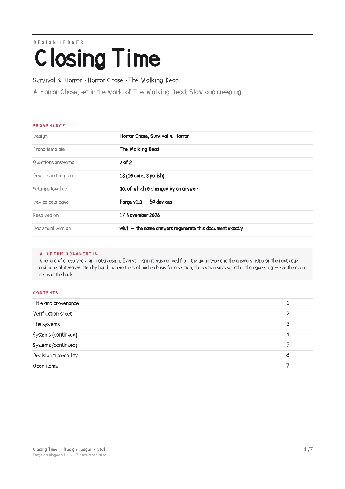
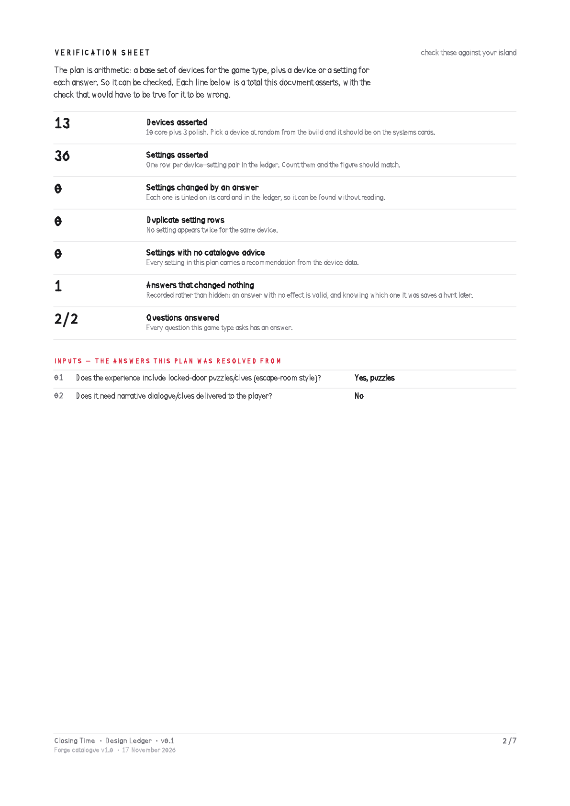
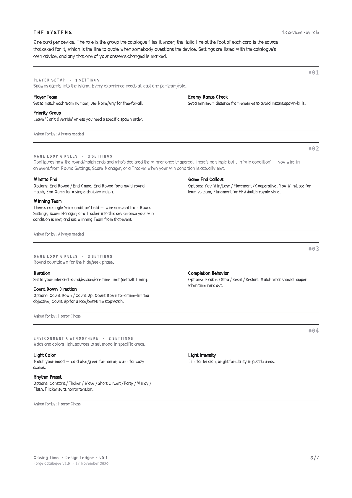

Design document · Structure C
The Ledger
Seven pages, for getting it defended. Every line says where it came from, and the document offers you a way to check it.
Why this one exists
The other two answer “should we?” and “how?”. Neither answers the question that arrives later and usually from somebody else: says who? A plan assembled out of recommendations should be able to show the recommendation, and should be able to show which parts of it you decided rather than accepted.
The pages






The verification sheet
This is the part that makes the structure worth its pages. It is not a checklist of things for you to assert; it is seven counts the document performs on itself, so a reader can open their island and confirm or refute each one.
The sample design has no answers that changed a setting, so the third row reads 0 = 0. That is the honest result for this plan rather than a placeholder, and it is also the reason a second sample design with a real change would show the traceability page doing its job.
What this structure is bad at
It is a terrible first document
Seven pages of serif provenance is not how you get somebody excited. Hand this to a friend before the Brief and you have made their decision harder.
Provenance is verbose
Saying where every line came from roughly doubles the length for the same information. If nothing is ever questioned, most of that is waste.
It can only be as honest as the model
The verification sheet is worth nothing if the counts are decorative. Every one of them is computed from the model, and a check that cannot fail would be worse than no check at all.
How it is made
Generated by tools/gdds/render.mjs ledger from the same document model as A and B. The device cards are paginated by a measuring pass, and the traceability and verification pages are built by walking the model rather than by formatting a string, so a count cannot drift away from the plan it describes.
These are mockups: nothing here is wired into the app yet. The PDF is a real file, generated by node tools/gdds/render.mjs ledger.